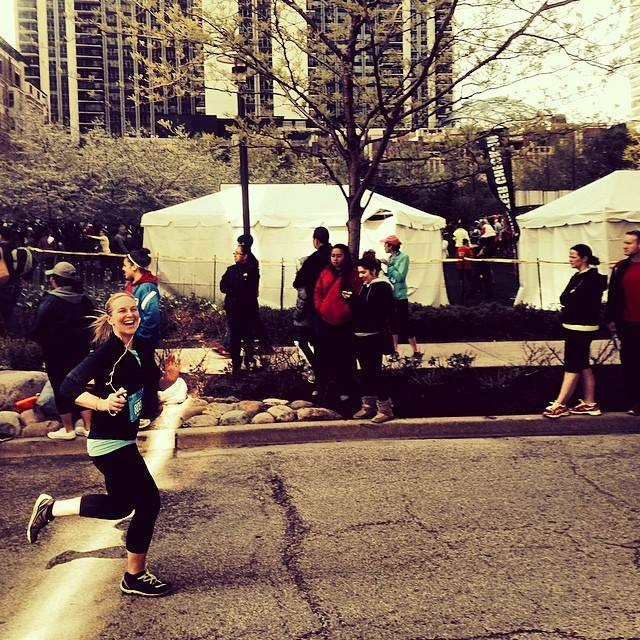

About the Bloggers

Kristen Pals, MMM Candidate
Summary
Kristen was born in Frankfurt, Germany before settling in Beaver Dam, WI for her childhood. She attended Northwestern University and studied Industrial Engineering. After college, she worked at Deloitte Consulting and Groupon, Inc. She then returned to the Kellogg School of Management, where she is pursuing a dual-degree with an MBA and a Master in Engineering Management. In her free time, Kristen enjoys cooking, drinking wine with friends, and working out.
Favorite Kellogg Experiences
- SKI TRIP!!!!!
- Charity Auction Ball
- Operations Strategy with Allon
Connect With Me

Courtney Bryant, MBA Candidate
Summary
Originally from Cincinnati, Ohio, Courtney completed her Marketing undergraduate degree at Indiana University's Kelley School of Business. She then began a brand management career at Unilever, where she spent 5 years in the wonderful world of deodorants; first on Dove Deodorant and then on Degree Deodorant. Courtney is currently pursuing an MBA at the Kellogg School of Management.
Favorite Kellogg Experiences
- Kellogg Band Tryouts
- KWEST Portugal 2013
- KIEI924 - duh!
Connect with me:

Betsy Doherty, MBA Candidate
Summary
Betsy was born in Eden Prairie, MN and has since lived in Los Angeles, Hong Kong, and Evanston. She attended USC for undergrad, where she started as a Fine Arts major before switching to Business Administration. After graduating she spent six years in mergers and acquisitions consulting at KPMG. She is now pursuing her MBA at Kellogg in order to get back to those artistic roots and transition into merchandising.

Amanda is from Seattle, WA. Prior to coming to Kellogg she worked at Nordstrom in their Corporate Strategy group. This past summer Amanda interned at Google in their Consumer Operations group. Outside of school Amanda enjoys wakesurfing, snowboarding, hot yoga, cooking, and jogging.
Favorite Kellogg Experiences
Connect With Me
Amanda Casey, MBA Candidate
Summary
Favorite Kellogg Experiences
Connect With Me